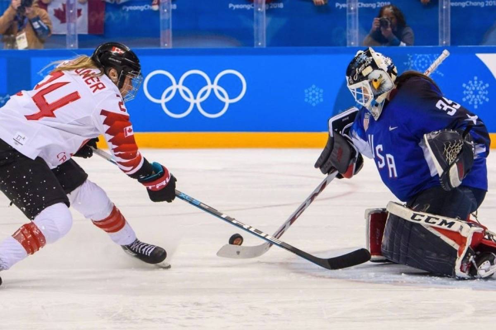

Archery

Archery first appeared in the Olympic games in 1900. Athletes use Recurve bows with a draw weight of around 50 pounds. Archery has been contested in 16 Olympiads, with a total of 84 nations competing.
Artistic Swimming
Artistic swimming is a women's Olympic sport which combines technical perfection, synchronisation and choreography. It was first introduced into the Games in 1984 and currently consists of duet and team events.
Athletics
Athletics consists of many track and field events including running, jumping and throwing. The athletics track is 400m in length and has been contested at every Summer Olympics since the birth of the modern Olympics.
Badminton

Badminton was first held as a demonstration sport at the 1972 Summer Olympics and since 1992, men's and women's singles and doubles have been held at every Summer Olympics.
Baseball and Softball
Baseball and softball are planning to be included in the next Summer Olympics after being exluded from the Games in 2012. Both of these sports are incredibly popular among many nations.
Basketball

Basketball has been included in the Summer Olympics as a men's sport since 1936 while women's basketball joined in 1976. The USA National team is dominant for both men and women.
Beach Volleyball

Beach Volleyball was introduced into the Games in 1992 as a demonstration and has been an official competition since 1996. This event features two 24-team tournmanets, one for mean and one for women.
Boxing

Boxing has been contested at every Summer Olympic Games since 1904, except for the 1904 Summer Olympics in Stockholm because the sport was banned by Swedish law at the time. The 2008 Summer Olympics were the final games with boxing as a male only event.
Canoe Slalom

Canoe Slalom was introduced into the games in 1972 at the Summer Olympics in Munich. Athletes use slalom watercrafts to manuever through a course of hanging downstream or upstream gates as fast as they can.
Canoe Sprint

Canoe sprint, originally known as "flat water racing", was introduced into the games in 1936 as a men's competition with the women's event entering in 1948. The event consists of a speed race to an end line of a flat water course.
Cycling

Cylcing in the Summer games consists of multiple different events such as BMX, mountain biking, track cycling and road cycling. Within these there are team sprints, match sprints and many others for both men and women. Cycling combines skills in technicality, strength and speed.
Diving/h3>

Diving is 1 of 4 water sports at the Olympic and is comprised of both men and women's 3m springboard, synchronised 3m springboard, 10m platform and synchronised 10m platform. This competition features up to 136 athletes.
Equestrian

Equestian disciplines at the Summer Games are Dressage, Eventing and Jumping. In each event both individual and team medals are awarded where women and men compete together. Britain is the only nation that has won at least on Gold Medal in every equestrian event.
Fencing

Olympic fencing was first included at the 1896 Games in Athens based on traditional skills of swordsmanship. Men and women compete in individual and team events where three types of weapon are used: foil, eppe and sabre.
Football

Football, commonly known as soccer in the United States, is an extremely popular and competetive sport in the Summer Olympic Games. Men's football has been included since the first Games with women's football joining in the 1996 Atlanta Games. Teams must be associated with Fifa to play.
Golf
Olympic Golf is based off of the qualification of earlier competitions leading to the Official World Golf Ranking where the top 15 within each gender qualify automatically. However, a total of 60 players will qualify where each country has a limit of 4 golfers.
Gymnastics
Gymnastics is an exciting Olympic sport consisting of multiple different events for men and women. Men's gymnastics includes floor, pommel horse, rings, vault, parallel bars and high/horizontal bar. Women's gymnastics includes vault, uneven bars, beam and floor. There are both individual and team titles.
Handball

Handball was introduced into the Games in 1972 and follows unique rules: a match consists of two 30 minute periods, each team has 7 players including a goalie, outfield players can tough the ball with any part of their body above the knee, if a player holds possession they can driblle or take three steps and only the goalkeeper is allowed to enter the goal area.
Ice Hockey
Ice hockey is unique as it is hold at both Summer and Winter Olympics. It was introduced for men in 1920 while women's ice hockey was added in 1992. The game is played in a tournament style with one nation as winner.
Judo

Judo is a traditional Japanese wrestling sport introduced into the Summer Olympics in 1964 and has evolved since into a modern martial art. The top 18 athletes in each division qualify however each NOC is subjected to a limit of 1 judoka per division.
Karate
Karate was recently introduced into the Summer Olympics and was planning to makes its debut at the 2020 Games. It was planning to feature two types of events, Kumite and Kata. The event consists of 60 competitors for the Kumite competition and 20 for the Kata competition.